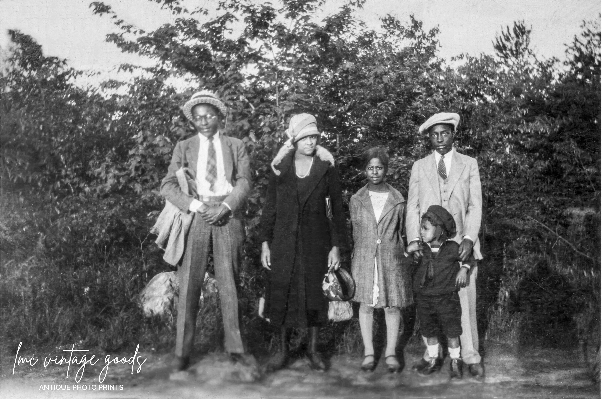

Let's Start with What You Know
How many of you have family Bibles at home?
Do you know which church your grandparents attended?
Have you found church names in obituaries?
These are your starting clues!
